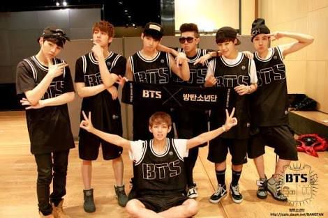
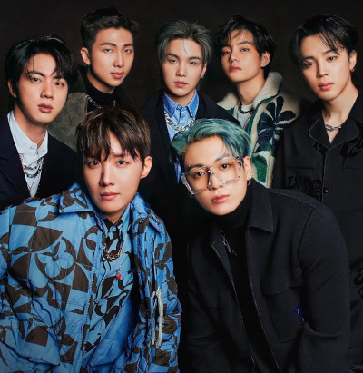
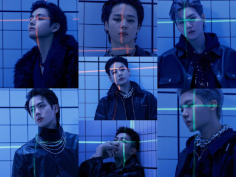

Ínicio de tudo
Em 2010, a agência pequena e de orçamento comprometido Big Hit Music estava buscando jovens para participar de um grupo masculino de hip-hop. O BTS começou sua formação em 2010 depois que o CEO da Big Hit Music, Bang Si-hyuk, se encontrou com o líder do grupo RM e ficou impressionado com seu rap. O BTS era originalmente um grupo de hip-hop semelhante ao 1TYM da YG Entertainment, mas entre a sua formação inicial e a sua estreia, Bang Si-hyuk decidiu que os jovens contemporâneos precisavam de "um herói que pudesse lhes dar um ombro para se apoiar, mesmo sem falar uma palavra". O grupo deveria estrear em 2011 e aparecer em várias faixas de artistas como 2AM e Lee Seung-gi antes de sua estreia ser adiada e o grupo ser reorganizado em um grupo de ídolo mais tradicional. A formação foi então finalizada com Jin, Suga, J-Hope, RM, Jimin, V e Jungkook em 2012. Seis meses antes da sua estreia, eles começaram a ganhar atenção por sua presença em vários sites de mídia social, bem como seus covers de música no YouTube e SoundCloud.
História do Bts (BANGTAN SONYEODAN)
BTS, também conhecido como Bangtan Boys é um grupo masculino sul-coreano formado pela empresa Big Hit Music, uma subsidiária da HYBE Corporation, em 2013. Ele é composto por sete membros: RM, Jin, SUGA, J-Hope, Jimin, V e Jungkook. O grupo realizou sua estreia oficial em 13 de junho de 2013, com o lançamento do single "No More Dream", faixa do single álbum 2 Cool 4 Skool. As conquistas do BTS levaram o grupo a ser o número um na lista Forbes Korea Power Celebrity para 2018, que classifica as celebridades mais poderosas e influentes da Coreia do Sul. A Billboard comparou o pandemônio e a loucura dos fãs em solo americano com o caos causado pelos Beatles na década de 1960. O aumento da popularidade do grupo continuou com o lançamento da trilogia de álbuns Most Beautiful Moment in Life. The Most Beautiful Moment in Life, Part 2 e The Most Beautiful Moment In Life: Young Forever estrearam na Billboard 200. The Most Beautiful Moment in Life, Part 2 também alcançou a primeira posição da Parada de Álbuns Mundiais da Billboard e permaneceu na mesma por várias semanas, tornando-se o primeiro grupo de K-Pop a conseguir essa colocação. O grupo continuou a superar-se com o lançamento de seu segundo álbum completo, Wings (2016) que alcançou a primeira posição do iTunes em mais de 26 países. O álbum também estreou no 26º lugar na Billboard 200, marcando a posição mais alta já alcançada por um álbum de K-pop na parada até então. Wings é tido por muitos especialistas como a ascensão do BTS como estrelas globais. O ano de 2018 começou com conquistas notáveis para o grupo. Em 6 de fevereiro de 2018, o grupo recebeu o seu primeiro certificado de ouro pela Recording Industry Association of America (RIAA), com o remix de "Mic Drop" tornando-se o primeiro grupo de k-pop a realizar tal feito. Apenas três dias depois, o single "DNA" também recebeu um certificado de ouro nos EUA. Em 28 de fevereiro o BTS ganhou o prêmio de Artista do ano no Korean Music Awards (KMA), tido como o Grammy coreano. Ao ganhar o grande prêmio da noite, o BTS se torna o primeiro grupo de K-Pop Idol a ganhar o daesang no Korean Music Awards. Eles são conhecidos por sua grande quantia de fãs internacionais, tendo realizado shows na Ásia, Europa, Austrália, América do Norte e América Latina. Além disso, o grupo é conhecido por sua grande presença na mídia social, e foram nomeados pela Forbes como o artista mais retuitado em março de 2016 no Twitter. Após isso, houve o lançamento do primeiro emoji de K-Pop do Twitter, sendo ilustrado pelo símbolo do grupo. Em outubro de 2016, a Billboard classificou o BTS em 1º lugar em seu gráfico social de 50, tornando-o primeiro grupo coreano no topo do gráfico. O grupo ainda permanece em 1º lugar há 177 semanas, quebrando o record da parada, que antes pertencia a Justin Bieber. Em junho de 2017, a revista Time nomeou a banda como uma das 25 pessoas mais influentes da internet. Em 20 de novembro de 2017, o Guinness World Records revelou que a BTS ganhou um lugar em sua edição de 2018 por "ter o maior número de engajamentos do Twitter para um grupo musical".Em dezembro, eles foram revelados como sendo os mais tuitados sobre celebridades em 2017, sendo "curtidos ou retuitados mais de meio bilhão de vezes (502 milhões)" em todo o mundo, mais do que o presidente dos EUA Donald Trump e Justin Bieber combinados. Em 2022, o BTS tornou-se o artista que mais vendeu álbuns da história da Coréia do Sul, vendendo mais de 30 milhões de acordo o Circle Chart. O seu álbum de estúdio Map of the Soul: 7 (2020) é o álbum mais vendido de todos os tempos da Coreia do Sul. Eles são o primeiro ato não-inglês e asiático a realizar concertos esgotados no Wembley Stadium e no Rose Bowl (Love Yourself World Tour em 2019), e foram nomeados pela Federação Internacional da Indústria Fonográfica Global (IFPI) como Artista Global do Ano em 2020 e 2021.O grupo já participou de diversas premiações como American Music Awards, Billboard Music Awards, Golden Disc Awards e teve duas indicações para o Grammy Awards. Em 2017, eles fizeram parceria com a UNICEF para estabelecer a campanha anti-violência Love Myself e passaram a discursar em três sessões da Assembleia Geral das Nações Unidas. O grupo foi destaque na capa internacional da revista Time como "Líderes da Próxima Geração" e foram apelidados de "Príncipes do Pop", o BTS também apareceu nas listas da Time das 25 pessoas mais influentes da internet (2017-2019) e das 100 pessoas mais influentes do mundo (2019). Atualmente, por causa do serviço militar obrigatório na Coreia do Sul, o grupo teve suas atividades artísticas interrompidas e sua previsão de retorno está agendada para 2025.
Esta é uma das primeiras fotos dos membros do BTS juntos
Significado do nome
O nome do grupo, BTS, significa, em coreano, Bangtan Sonyeondan (coreano: 방탄소년단), que significa literalmente "Escoteiros à prova de balas". De acordo com um dos membros, J-Hope, o nome 'Bangtan' que dizer "ser resistente a balas, então significa bloquear estereótipos, críticas e expectativas que visam adolescentes como balas, para preservar os valores e o ideal dos adolescentes de hoje. Em julho de 2017, o BTS anunciou que seu nome também significaria "Beyond the Scene" (Além da cena), como parte de sua nova identidade de marca. Isso estendeu seu nome para significar "crescimento da juventude BTS que está indo além das realidades que estão enfrentando e indo em frente"
Agora vamos listar abaixo para vocês nome, data de nascimento, idade e lugar onde cada membro nasceu.

Jin: nascido Kim Seok-jin em Gwacheon, Coreia do Sul em 4 de dezembro de 1992 (30 anos).
Suga: nascido Min Yoon-gi em Buk-gu, Daegu, Coreia do Sul em 9 de março de 1993 (29 anos).
J-Hope : nascido Jung Ho-seok em GwangJu, Coreia do Sul em 18 de fevereiro de 1994 (28 anos).
RM : nascido Kim Nam-joon em Ilsan, Goyang, Coreia do Sul em 12 de setembro de 1994 (28 anos).
Jimin: nascido Park Ji-min em Busan, Coreia do Sul em 13 de outubro de 1995 (27 anos).
V : nascido Kim Tae-hyung em Daegu, Coreia do Sul em 30 de dezembro de 1995 (27 anos).
Jungkook : nascido Jeon Jung-kook em Busan, Coreia do Sul em 1 de setembro de 1997 (25 anos).
Vídeo gravado por uma ARMY em um show no Brasil 💜
Então é isso ! Espero que vocês tenham gostado do meu artigo com todas essa curiosidades sobre os meninos. Te espero no próximo artigo ARMY 💜.